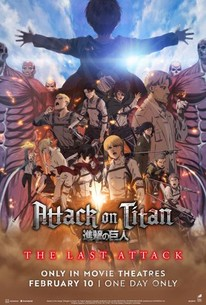

À propos de moi

Bonjour, je m'appelle ziad KHARTOUF je suis un eleve de premiere anne college jaime jouer a roblox et regarder des anime come aot(attack on titan)et naruto et blue lock
roblox
j'aime jouer roblox beaucoup mes jeux favorie c'est blue lock rivals et dead rails et grow a garden .

anime
J'aime regarder les anime come blue lock,black clover et naruto

blue lock
Dans le monde de blue lock, chaque décision peut changer le destin d'un joueur. Isagi, attaquant de deuxième année, a vécu un moment crucial dans un match qui allait déterminer la qualification de son équipe pour les championnats nationaux. Choisir de passer le ballon plutôt que de tirer a conduit à la défaite, laissant Isagi s'interroger sur ses compétences et ses choix sur le terrain. Cependant, le destin en a décidé autrement pour Isagi : il a reçu une lettre de la Fédération japonaise de football le désignant comme athlète certifié. Ce retournement de situation inattendu l'a amené à rencontrer Kira, un joueur d'un match précédent, alors qu'il se rendait à une rencontre mystérieuse qui allait changer son parcours footballistique à jamais.
attack on titan
Within a massive walled settlement lies a district known as Shiganshina. Inside this district, there lives a boy named Eren Yeager who dreams for a life outside this walled settlement. However, his quest for independence is hampered by the presence of giant humanoid creatures known as Titans that roam the land eating anyone they can find. Despite Eren's frustration at living inside, what he considers, a birdcage, his family try to convince him to accept the life he currently has living within the safety of Wall Maria. However Eren, along with his adoptive sister Mikasa, and best friend Armin, are about to receive a rude awakening when a Colossal Titan appears before them.

Naruto
Dans l'univers de la série, Naruto est un jeune ninja du village de Konoha. Hôte du démon renard à neuf queues, une créature qui a attaqué le village par le passé, il est rejeté par les autres villageois. Son ambition est de devenir Hokage, le chef du village, afin de gagner le respect des habitants.
chilling
j'aime chill et ecouter a la music